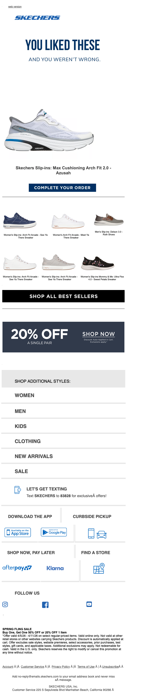

Your cart expires soon!
| From | SKECHERS <hello@msgs.skechers.com> |
| Received | 2026-04-06 13:21 UTC |
| Score | 5.5/10 |
## SKECHERS — "Your Cart Expires Soon!" Abandoned Cart Email Review
1. Executive Summary
A competent but underpowered abandoned cart email. The hero correctly surfaces the cart item and pushes a single CTA, but the urgency promised in the subject line is nowhere visible in the email body — there's no countdown, no "expires in X hours," no scarcity signal. Below the fold, the email piles on category nav, a promotional banner, and utility links that collectively dilute the recovery focus. It functions; it doesn't compel.
2. Business Impact Score: **5.5 / 10**
3. What's Working
- Product image is front and center. The hero shows the exact abandoned item (Skechers Slip-ins Max Cushioning Arch Fit 2.0 - Smooth) with a clean white background — strong visual recall for the shopper.
- Single primary CTA. "Complete Your Order" is the only prominent button in the hero, which is the right call for a cart recovery email.
- Discount banner is visible. A 20% Off offer with a "Shop Now" button appears below the hero — adds incentive even if it's a general promotion.
- Product name is legible directly under the hero image, which confirms the item to the recipient.
4. What's Weak
- No urgency is visible. The subject line promises cart expiry, but the email body contains zero expiry language — no timer, no "expires tonight," no "only X left." The subject line and email body are misaligned. This is the single biggest failure.
- Headline is generic. "You Liked These / And You Weren't Wrong" is soft and self-congratulatory. For an abandoned cart, urgency language ("Still Thinking It Over?" or "Your Cart Is About to Disappear") would outperform this.
- Category navigation is noise. Women / Men / Kids / Clothing / New Arrivals / Sale as text links below the fold invites the user to browse instead of convert. That's the opposite of the goal.
- No price shown. The product price is absent from what's visible. For a hesitant cart abandoner, seeing the price — especially alongside a 20% offer — is a conversion lever. It's missing here.
- 20% Off feels disconnected. It floats below the hero without being tied explicitly to the cart item. The logical message ("Get 20% off the item in your cart") is never made.
- Layout gets cluttered toward the bottom. Afterpay, Klarna, curbside pickup, find-a-store, and social icons stack up in a way that fragments attention. These belong in a footer, not as equals to the conversion CTA.
5. Recommendations
1. Add expiry urgency to the body. Surface the cart expiry window visually — a line like "Your cart expires in 24 hours" directly under the product name is table stakes for abandoned cart.
2. Show the product price. Especially if pairing with a 20% off offer — make the math visible ("Was $90, now $72").
3. Tie the discount to the cart item explicitly. "Use code at checkout — applies to your cart" closes the gap between the offer and the recovery action.
4. Remove the category nav section. Women / Men / Kids / Sale links should not appear in an abandoned cart email. Save them for browse abandonment or winback.
5. Sharpen the headline. Replace "You Liked These / And You Weren't Wrong" with urgency-forward copy tied to the expiry hook.
6. Consolidate secondary modules. Afterpay/Klarna, app download, and store locator can share a single compact row rather than dominating the lower half.
6. Bottom Line
The email has good bones — right product, right CTA, visible discount — but it fails its own brief. A cart expiry email that shows no expiry is a missed conversion. Tighten the body copy, surface the urgency, price the item, and remove the browse-inducing nav. Those changes alone would meaningfully lift recovery rate.
7. Evidence
| Module | Observation |
|---|---|
| Overall purpose | Abandoned cart recovery — recover a single cart item |
| Hero / primary value prop | Product image + name + "Complete Your Order" CTA; no urgency copy, no price |
| Membership / benefits | None visible |
| Product recommendation modules | "Shop All Best Sellers" banner row with ~4 small product thumbnails below hero |
| Utility / secondary modules | 20% Off promotional banner; Women/Men/Kids/Clothing/New Arrivals/Sale nav; App download; Curbside Pickup; Find a Store; Afterpay/Klarna icons; Social follow row |
| Bugs / friction / clarity issues | No visible broken images or layout breaks; the 20% Off banner text is small and the code (if present) is not legible at this render size |
## Technical Audit
## Technical Audit — Skechers "Your cart expires soon!"
From: hello@msgs.skechers.com | ESP/Platform: Attentive (skechers.attentivemail.com)
1. Technical Summary
Cart abandonment email delivered via Attentive, using table-based layout with a 600px fixed desktop width and a 620px mobile breakpoint. All outbound links are wrapped in Attentive's click-redirect service; the truncated source prevents full UTM verification, but several structural and compliance concerns are evident.
2. Link & Tracking Issues
HTTP redirect wrapper (high severity)
All links use http:// (not https://) for the Attentive click-tracking domain:
`
http://skechers.attentivemail.com/ls/click?upn=...
`
This exposes the redirect hop to downgrade attacks and may trigger security warnings in some clients. The wrapper should use https://.
Opaque redirect URLs
All destinations are base64/encoded inside the upn= parameter. UTM parameters and final landing pages cannot be verified from the source alone (see §6).
"Web version" link present
A web-view fallback link exists in the header row — good practice for deliverability.
3. Rendering & Accessibility
Empty <title> tag
`html
<head><title></title>...
`
The <title> is blank. Screen readers and some preview panes surface this value; it should match the subject line or a meaningful label.
Link color/decoration override
`css
#MessageViewBody a { color: inherit; text-decoration: none; }
`
This rule (targeting Gmail's #MessageViewBody wrapper) strips underlines and inherits body color for all links, which removes visible affordance for sighted users and reduces accessibility for low-vision readers. Apply selectively, not globally.
Alt text — unverifiable
Image alt attributes cannot be confirmed from the truncated source. Cart abandonment emails that render images off must show product names/descriptions via alt text; this must be verified against the full source.
Preheader padding technique
The preheader uses Unicode invisible characters (͏ = U+034F, = soft hyphen) as filler — standard but verbose. No functional issue; confirm filler is not accidentally rendered in any client during QA.
Mobile breakpoint set correctly
@media (max-width:620px) with display:block stacking — standard and correct.
Fixed 600px table width
The outer .nl-container has no explicit width:100% fallback visible; confirm the root <table> carries width="100%" as an HTML attribute for Outlook compatibility.
4. Personalization & Merge Tokens
The truncated source does not expose any merge/personalization tokens. For a cart abandonment flow, the following must be present and verified in the full source:
- Cart item name, image, price, and URL (each with a populated-or-fallback condition)
- First name personalization (if used in body copy)
- Confirm no unrendered
{{token}}or%%token%%placeholders are visible at send time; this must be validated in pre-send QA.
5. Compliance
Sending domain separation
The From header uses msgs.skechers.com, a dedicated sending subdomain — correct practice for DMARC alignment and reputation isolation.
CAN-SPAM physical address & unsubscribe — unverifiable from truncated source
The footer (not included in the provided excerpt) must contain:
- A valid physical postal address for Skechers
- A clearly labeled, one-click unsubscribe mechanism
These are legal requirements under CAN-SPAM. Confirm both are present in the full HTML.
Authentication headers — not provided
SPF, DKIM, and DMARC pass/fail status cannot be assessed without raw message headers. Attentive should be signing on behalf of msgs.skechers.com; verify DKIM d= aligns with the From domain.
6. Email-to-Site Continuity
All links are wrapped in Attentive's redirect (skechers.attentivemail.com/ls/click?upn=...), so UTM parameters exist only inside the encoded upn= payload and cannot be inspected from the HTML source. The following must be verified by decoding or clicking through in a test environment:
utm_source,utm_medium,utm_campaignpresent on all destination URLsutm_contentdifferentiated per CTA (e.g., cart CTA vs. logo vs. footer links)- Cart item deep-links resolve to the correct PDP with the item still in context (or graceful fallback if out of stock)
- The "web version" link resolves and renders the email correctly
7. Recommendations
| Priority | Issue | Action |
|---|---|---|
| High | HTTP redirect wrapper | Change all Attentive tracking links to https:// |
| High | CAN-SPAM footer — unverified | Confirm physical address and unsubscribe link in full source |
| Medium | Empty <title> | Set to subject line or "Skechers Cart Reminder" |
| Medium | #MessageViewBody a global override | Scope rule to specific selectors; don't strip all link decoration globally |
| Medium | UTM parameter verification | Decode and audit all upn= destinations in a staging environment |
| Medium | Alt text on product images | Confirm all images carry descriptive alt values, verified in full source |
| Low | Authentication header review | Pull raw headers from a test send and confirm DKIM/SPF/DMARC pass |
| Low | Merge token QA | Confirm no unfired tokens appear in any client during pre-send rendering test |
